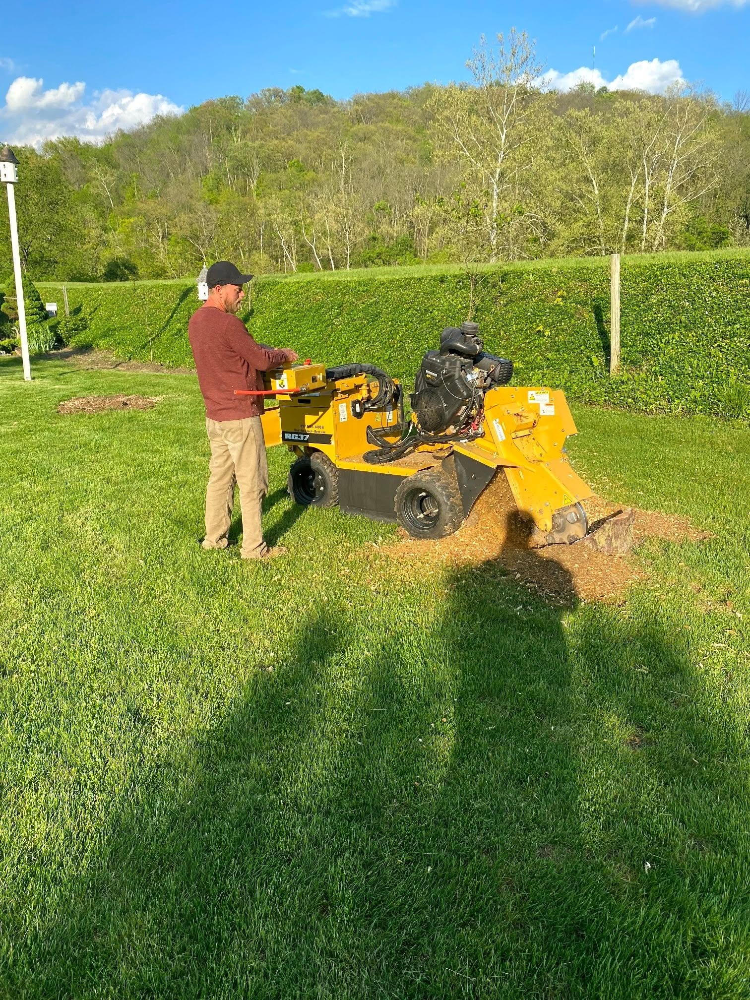

Stump Grinding vs. Stump Removal: Which One Do You Actually Need?

When a tree comes down, you're almost always left with a decision: what do we do about the stump? And most homeowners don't realize there are two very different answers to that question — with very different equipment, very different results, and a pretty significant gap in price.
Stump grinding and stump removal are not the same thing. One is a fast, relatively affordable job that most homeowners need. The other is a major excavation that's almost always overkill for a typical residential situation. Here's how to tell which one applies to you.
What Stump Grinding Actually Does
Stump grinding uses a machine with a spinning cutting wheel to chew through the wood of the stump. We grind it down below the surface of the ground — typically six to twelve inches below grade, sometimes deeper depending on what you're planning to do with the space afterward. The machine turns the wood into chips as it goes.
What's left behind is a hole filled with those wood chips and a little topsoil mixed in. The root system stays in the ground. The roots won't cause problems for most yards — they'll just slowly decompose over the next several years, and the ground above them will gradually settle. For the vast majority of residential jobs, this is a perfectly clean, complete result.
The grinder itself is a specialized piece of equipment — compact enough to fit through most fence gates and maneuver into tight spaces, powerful enough to work through any species of wood. A typical residential stump takes anywhere from fifteen minutes to an hour depending on diameter and hardness. Once it's done, you can rake the chips, add some topsoil, seed over it, and in a season you'll barely be able to tell a tree was ever there.
What it costs: Grinding is generally the more affordable of the two options, and the price comes down to the stump's diameter, how deep the roots run, and how easy it is to get the grinder to it. We'll always look at it in person and give you a written number before any work starts — no guessing over the phone.
What Full Stump Removal Does
Full stump removal means exactly what it sounds like: we dig out the entire stump along with the root ball. All of it. That requires heavy excavation equipment — usually a mini excavator — significant labor, and in most cases a large hole that needs to be backfilled with clean soil and re-graded before you can use the space again.
This is a much bigger job. The root system of a mature tree can spread out well beyond the canopy drip line and extend several feet deep. Pulling all of that out disturbs a substantial area of your yard, and you're left with a hole that needs proper fill material (not just the displaced soil, which will settle badly) and ideally some time to compact before you plant or build over it.
Full removal makes sense in a specific set of situations. Outside of those situations, it's usually more money, more disruption, and more follow-up work than you need.
Typical cost: 2–4 times the cost of grinding for the same stump, plus fill material and any grading work needed afterward.
When to Choose Each Option
Stump grinding is the right call when:
- You just want the stump below grade and the area clean and usable
- You plan to plant grass, lay sod, or put down groundcover over the spot
- You're not in a rush to plant another tree in exactly that location
- The roots aren't actively damaging anything (a walkway, foundation, or structure)
- You want the faster, more affordable option that still gives you a clean yard
Full stump removal makes sense when:
- You need to plant a new tree in the exact same spot and want it to establish without competing with old root structure
- The root system is actively heaving a sidewalk, cracking a foundation, or causing damage to a structure
- You're doing major construction or excavation in that area anyway and the equipment is already on site
- The stump is in a location where the decomposing roots would interfere with underground utilities or drainage
For 90% of the calls we get, stump grinding is the answer. It's clean, it's fast, it's reasonably priced, and it leaves you with a spot you can actually do something with.
What to Do With the Space After Grinding
After grinding, the hole is typically filled with the wood chips the machine produces. That's a fine base layer, but wood chips alone don't make a great growing medium right away — they're carbon-heavy and as they break down, they can temporarily tie up nitrogen in the soil. Here's what we recommend:
- For grass: Rake out most of the wood chips, top off with a few inches of quality topsoil, seed, and water. Give it a full growing season before it fully fills in.
- For a new planting bed: Mix some compost into the chip layer, top with topsoil, and let it settle for a few weeks before planting. The decomposing chips will actually improve drainage and soil structure over time.
- For hardscape (patio, walkway): If you're pouring concrete or laying pavers over the spot, wait a full year for the chips and remaining root material to settle and compact. Or have us remove the chips and bring in compactable base material before construction.
- For a new tree: Most species will grow fine in a ground stump spot, but wait at least a year to let the old root competition break down. If you need to plant immediately, that's when full removal becomes worth the extra cost.
One More Thing: Can You Do It Yourself?
You can rent a stump grinder. Most equipment rental places carry them. But they're genuinely heavy pieces of equipment, and using one effectively — especially on a large or hard stump — takes experience. You can get hurt. You can also damage the grinder if you don't know what you're doing, and rental companies charge steep rates for damage. For large stumps or stumps near structures, it's almost always worth paying a professional. For small, easy-access stumps, a rental might pencil out if you're comfortable with the equipment.
We'll always give you a straight answer on whether a job is worth DIYing or whether it makes more sense to call us. That's just how we operate.
Get a Stump Out of Your Yard for Good
Not sure which option is right for your situation? We'll come take a look and give you a straight answer. Free estimates, no obligation.